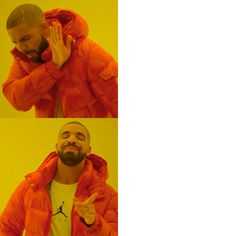
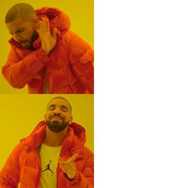
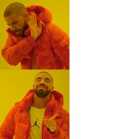

Memes
Meme often originate through the manipulation of a frame. Zooming into a certain subject and taking it out of context gives it a new meaning.
"I hope he will consider what I arrange, but be skeptical of it." - John Berger
The distortion of an artwork through reproduction and manipulation can bring about different or new meanings to an artwork -- whether it be a completely new and disconnected revelation or a diminished one. Combined with the use of technology to mass distribute such reproduction, people are often misled in the message of the original artwork. We see this theme existing not only in classical, but also other modern mediums such as social media, memes, and news.
Posts on social media don't always show the full picture. Tread with caution and refrain from blindly consuming information!

Meme often originate through the manipulation of a frame. Zooming into a certain subject and taking it out of context gives it a new meaning.
Reporters are often biased in how they report a news, especially if it involves politics. It is important to find out the full picture for yourself.